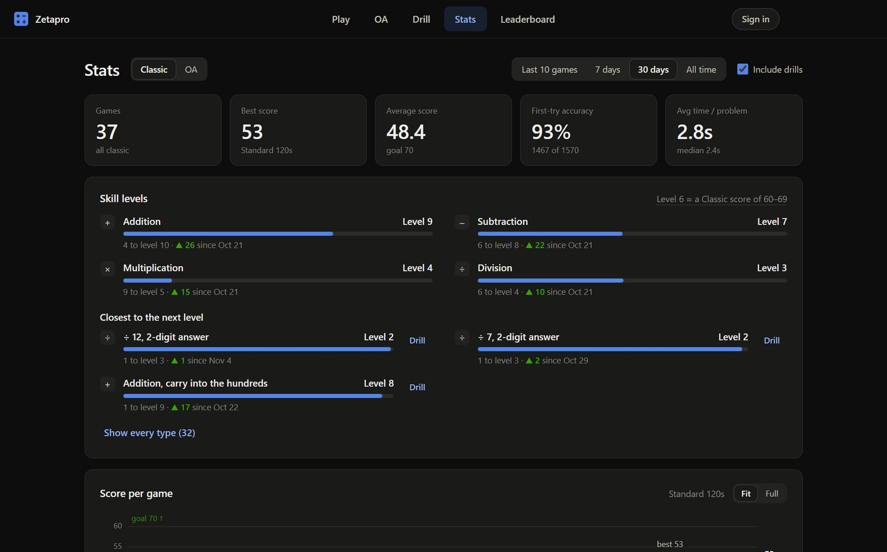
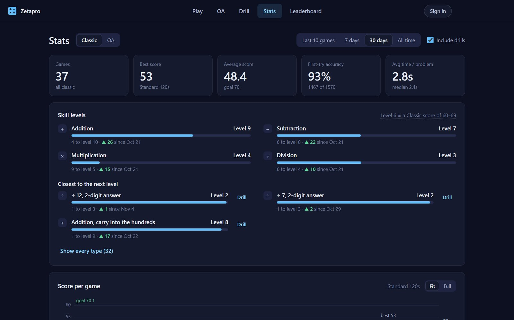
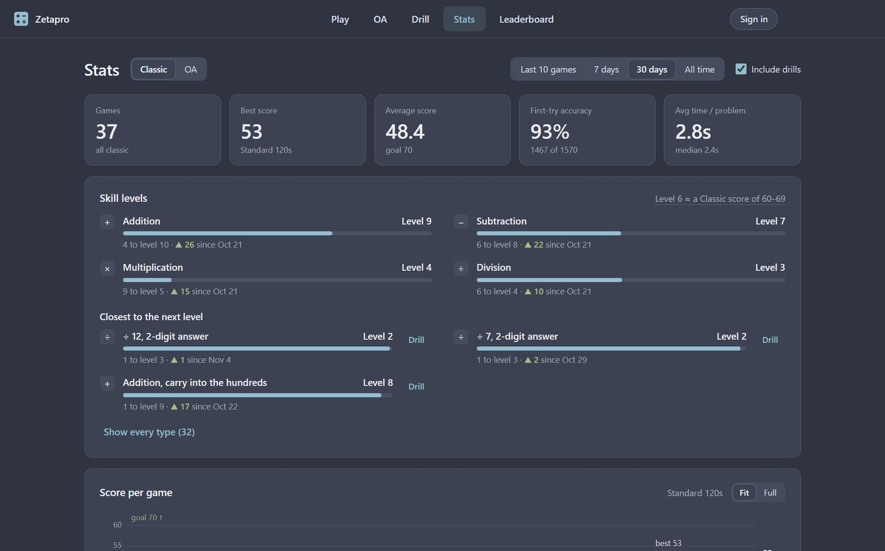
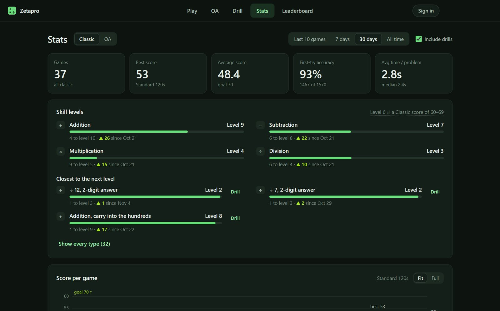
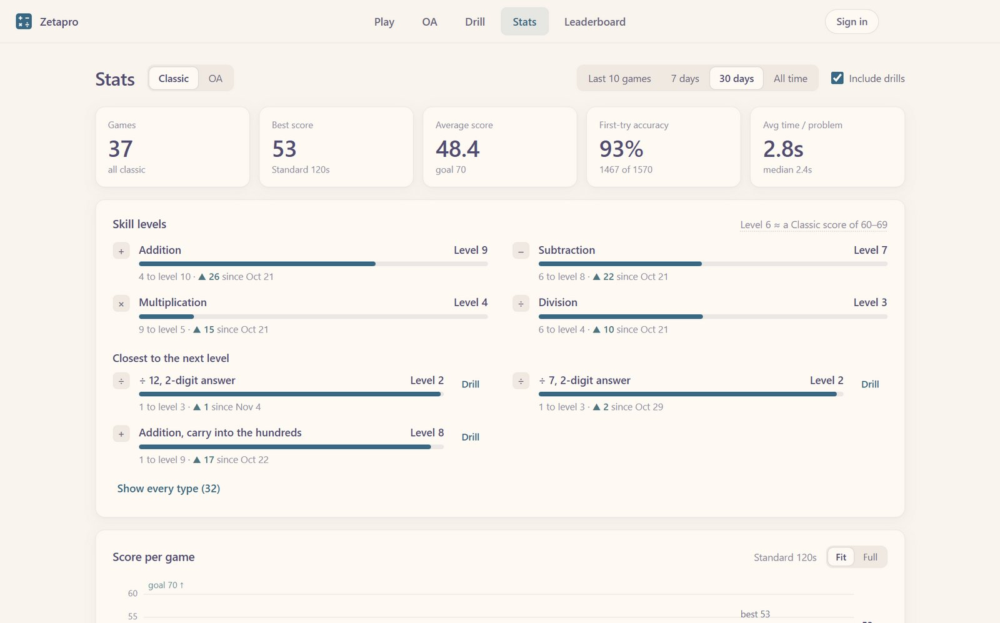
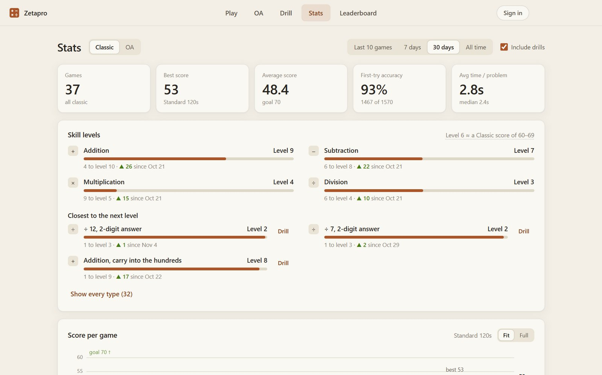

Zetapro
Free mental math practice and probability games for trading interview prep.
- Zetamac-style speed rounds
- Stats on what slows you down
- Probability and quant games






Free mental math practice and probability games for trading interview prep.





